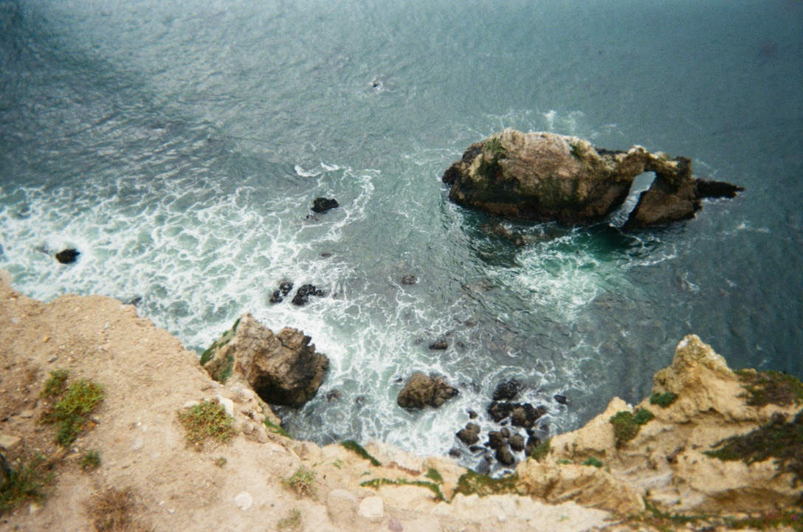

Photography

Point Reyes Farewell Trip
Captured a visual story of a weekend trip to Point Reyes with fellow Minerva students before leaving San Francisco. The project focuses on natural landscapes, candid moments, and the emotional atmosphere of a meaningful farewell trip.
View all photos →